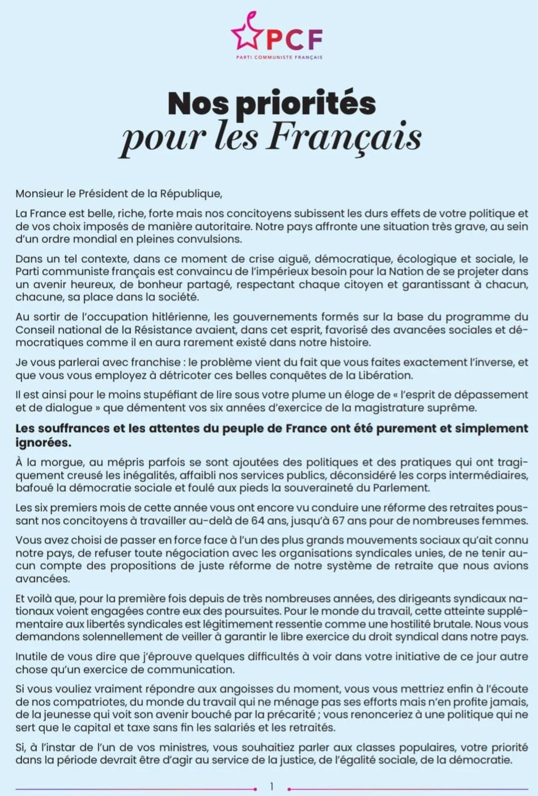
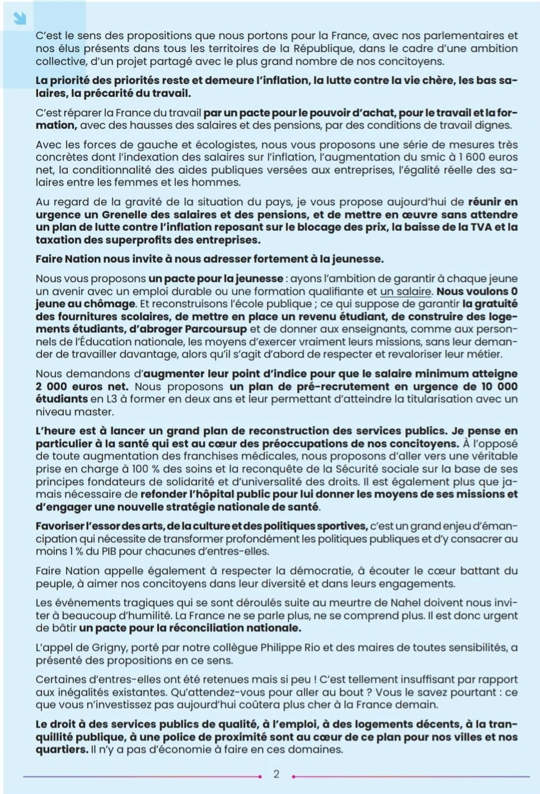
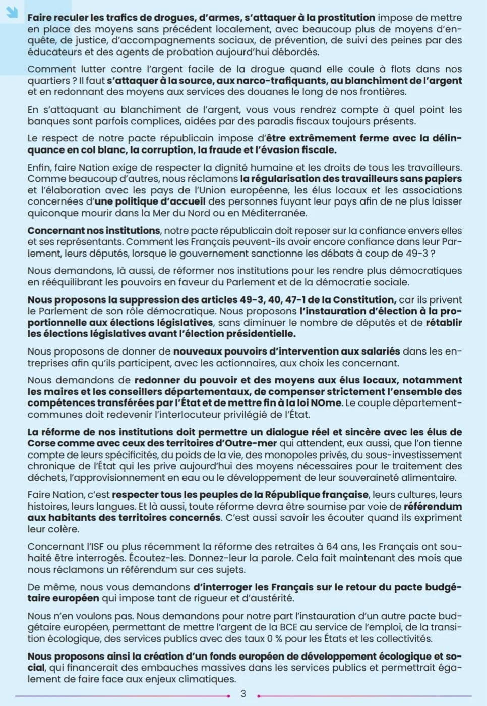
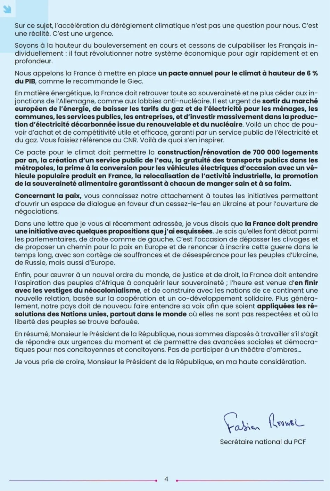

Document national relayé
Les priorités du PCF pour les Français à la rentrée 2023
Date indiquée par Facebook · 31 août 2023
Repères éditoriaux
Les quatre pages du document national sont conservées avec le partage du 31 août.
Texte conservé avec la publication
Propositions du PCF pour les français.




Sources
Archive rouge · export Facebook · AR-0002-FB-01594
À lire aussi · « On prend les mêmes et on recommence ! » (Fabien Roussel) · Le lien d’origine